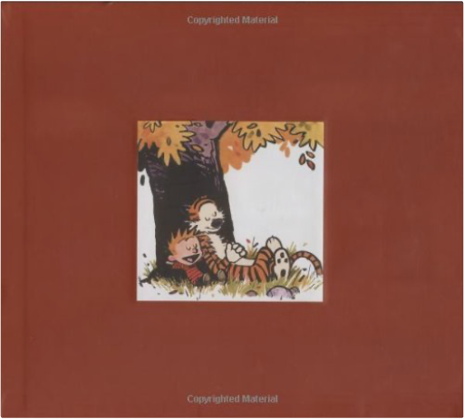

the complete calvin and hobbesbill watterson An Excerpt from Bill Watterson's Introduction:
"I’ve loved comic strips as long as I can remember. As a kid, I knew I wanted to be either a cartoonist or an astronaut. The latter was never much of a possibility, as I don’t even like riding in elevators. I kept my options open until seventh grade, but when I stopped understanding math and science, my choice was made. There is great personal satisfaction in attending to detail and quality, and I remain very proud of the standards the strip met day after day. I also liked the responsibility of knowing that, succeed or fail, it was all my own doing. This approach kept the strip very honest and personal—everything having to do with Calvin and Hobbes expressed my own ideas, my own values, my own way. I wrote every word, drew every line, and painted every color. It’s a rare gift to find such fulfilling work and I tried to show my appreciation by giving the strip everything I had to offer."
Exclusive Images from the New Collection </!— begin3pak —> </!— end6pak —> More Calvin and Hobbes Books
The Calvin and Hobbes Tenth Anniversary Book
Weirdos from Another Planet!
Attack of the Deranged Mutant Killer Monster Snow Goons masquerade of the red death, tome 3 : the unbeholdenrobert weinberg 4 The breathtaking conclusion to The Masquerade of the Red Death trilogy. Time is running out for Dire McCann and Alicia Varney. Despite all efforts, ancient monsters once again walk the face of the Earth, and the mysterious vampire known as the Red Death and his minions are preparing to seize control of the two most powerful organizations that rule the World of Darkness. Now is the time for the final battle of the Unbeholden. the picture of dorian grayoscar wilde Experiments with the notion of sin as an element of design. This novel is a puzzle, intended to tease conventional minds with its exploration of the myriad interrelationships between art, life, and consequence. |


 Made with Delicious Library
Made with Delicious Library